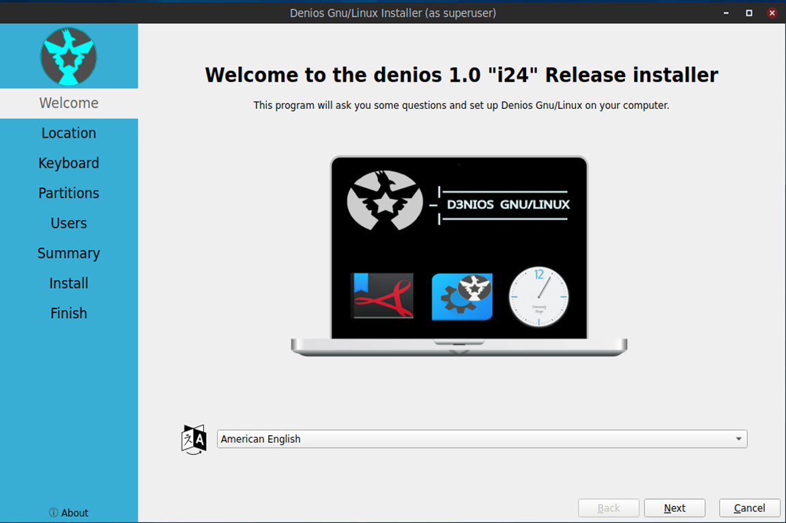
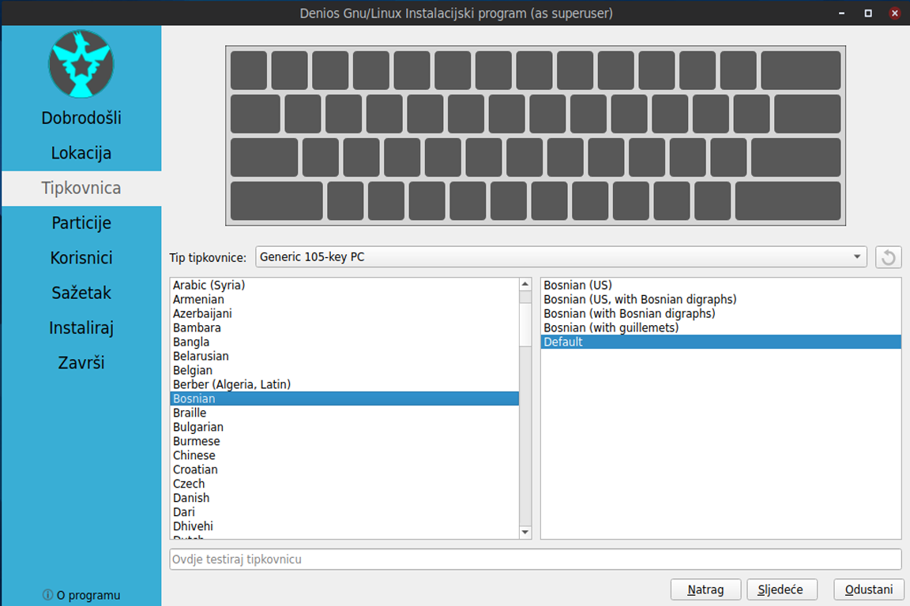
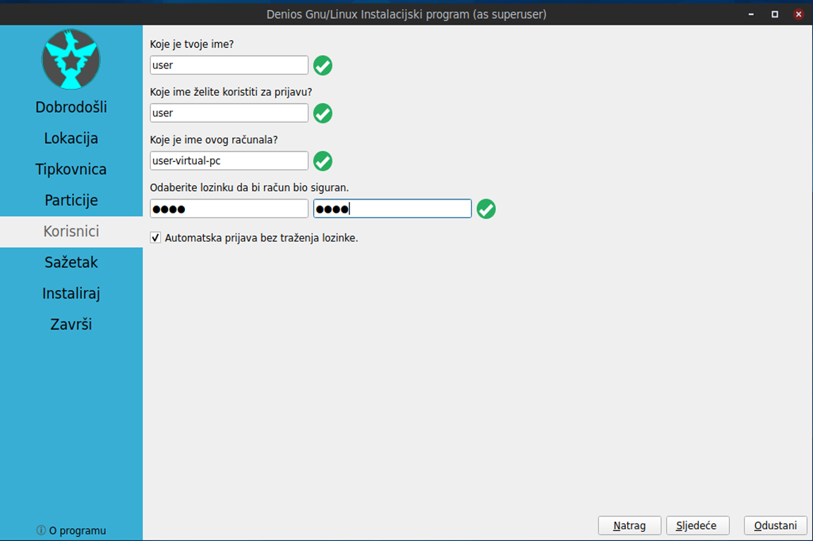
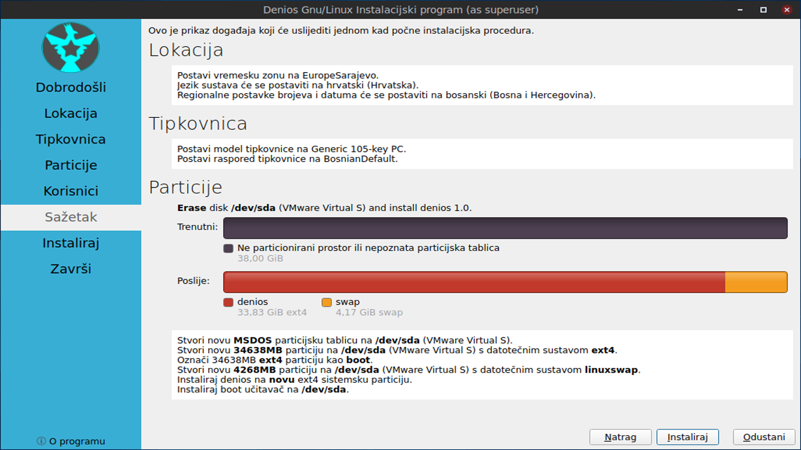
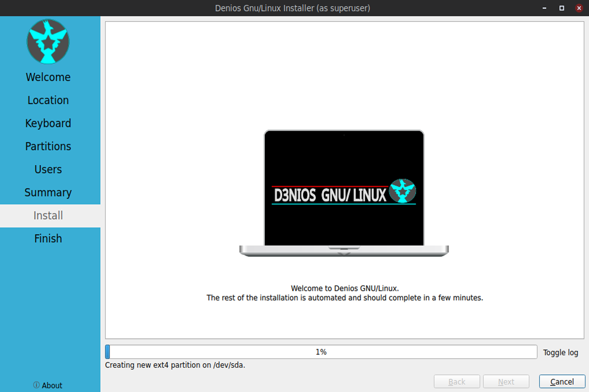
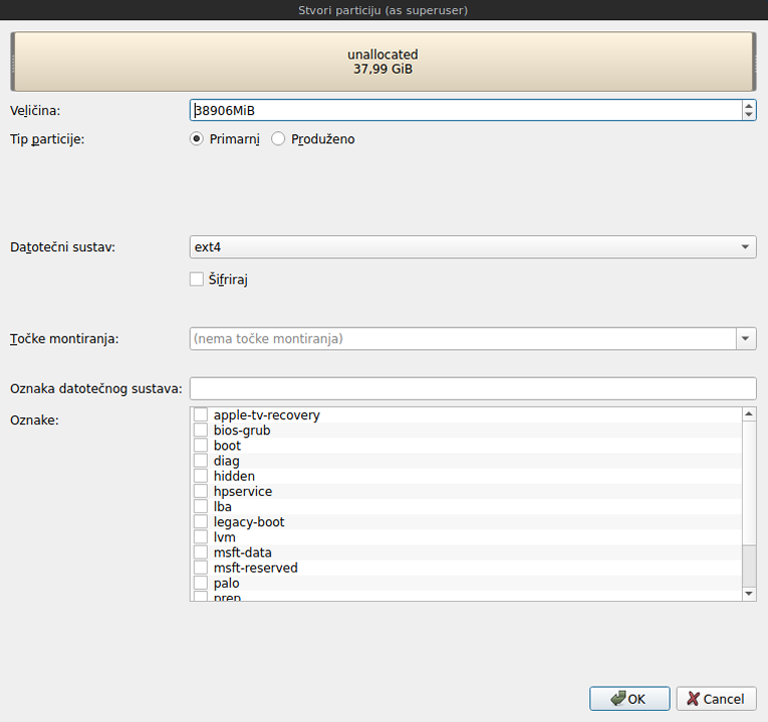

Chapter 1.3 Installation
This guide will help you install ParrotOS (latest version) on your computer step-by-step through the default official installer: Calamares. This guide applies to all Denios-OS versions. Any problems or missing details, please report it HERE.
Starting the installer
At the start of the boot process a grub splash screen will be shown. To install select . If Denios has a problem with your graphics card like newer nvidia cards select . To test your ram select .

Once you have booted into the live session, feel free to explore Denios and make sure all your hardware works. Once you are ready to install Denios, double click the icon in the top-left corner of the desktop Install Denios 1.0 or :menuselection:` System Tools –> Install Denios 1.0`.

The next step is selecting the system’s language Language from drop down box. Choose your language and click on Next Next button will move you on to the next task. To cancel an installation press the Cancel button.
Selecting Your location
The next screen will show you a map of the world where you can choose your location. Your location will be used to set your time zone and download server. To see what region you have chosen use the Region drop down menu. The Zone field should have a major city with the same time as you. If you want to get to the your time zone manually faster you can type in the name of a big city in the same time zone. Towards the bottom you can to change your system language by pressing the upper Change button. To change the how numbers and dates appear on your system press the lower Change button. To move to the next step once again press the Next button. To move back to selecting your language to change your language press the Back button.

Selecting Keyboard Layout
Next select your keyboard layout, you can check your keyboard matches the keyboard shown picture shown. The Keyboard Model menu lets you choose different variants, the left column lets you change language, and the right column gets different variants. At the bottom you can type to make sure your layout is correct. When you have selected your keyboard layout press the Next button to move on.
Setting up partitions
If all you want is Denios on your machine, you can select the Erase disk button. This will format the disk and delete all data on the disk, which is why having your data backed up before this point is extremely important. If you choose to do this you can continue on to user setup. To change the storage device to install Denios on use the Select Storage device drop down menu. To choose to use a swap file under Erase disk keep or to not use swap choose . If you want to encrypt your drive press the Encrypt system checkbox and then you will need to enter the encryption passphrase twice make sure you have it typed in correctly. It is strongly advised to write down this passphrase and keep it somewhere safe.
Warning
Erasing your entire disk or partition may cause you to lose data so please backup beforehand.
Note
If you had a previous Linux install with swap you will need to unmount the swap. To do this run
sudo swapoff -a
which will unmount them and any swap partitions. This will not work if you have data partition mounted open PCManFM-Qt and press the upward pointed arrow on each partition in the Places sidebar to unmount all data partitions.
To move back to Selecting your keyboard layout press the Back button. To advance to the setting up users press the Next button.
User Setup
The user setup section creates a user profile, consisting of typing your name into the What is your name? field. Next type your username in the What name do you want to use to log in?. Put what you want your hostname of your computer to be in the what is the name of this computer? field. The last thing you need to enter is your password in the Choose a password to keep your account safe. Enter your password twice to make sure you have not mistyped it. If a name can actually be used as a username or hostname a green checkmark will appear to the right of it if you cannot a red x will appear. Pressing the Next button will give you a summary screen, showing you the settings before the install begins. Once you have checked the summary click the Install button to begin the installation.
The summary screen shows what settings will be installed and you can double check everything is how you want it. After pressing the Install button a dialog will pop up to confirm installation. To actually install press the Install now button. To not start installing and go back press the Go back button.
The Install
The Denios installer provides some useful information while the installer is running. On the bottom of the window is a progress bar. On the right end of the progress bar is the percentage of the installation complete. To see command line output of the install press the Toggle log button. Once Denios is installed you have a checkbox Reboot now after your Denios is installed and is now finished. There is a slideshow while you install and to move to the next slide left click and to move to the previous slide right click.
Rebooting into the finished install
After the install is finished you will need to reboot your system into your new install. If you want to continue using the live system but end the installer uncheck the Reboot now checkbox. To close the installer press the Done button. After this your computer will reboot and you should remove your install media.
Manual partitioning
Warning
Trying to use nonlinux filesystems such as NTFS or FAT as your root filesystem will result in a broken system.
If you wish to manual set up partitions, as an advanced option you will have to choose which file-system you want. A file-system controls how your files are accessed at lower levels on the disk. If you are booting your computer in UEFI mode a more modern firmware compared to BIOS you will need to create an EFI system partition (see efi system partition Wikipedia for more detail). To create this partition you will need a FAT32 file-system with the ESP flag to be mounted at /boot/efi/ under the mount point. You will also need a root (/) file-system, several file-systems included for Denios are Ext4, XFS, and Btrfs. Denios 22.04 has bug with installing BTRFS and This guide on Denios discourse

Warning
Creating a new partition table will erase all data on the drive and deleting a partition will delete all data on the partition.
If you have a new hard disc or solid state drive press the New Partition table button but this will delete the whole disc if you have any data on it. After pressing this button you will get a dialog saying what kind of partition table to use. The Master Boot Record button will create an old partition table but will only allow 4 primary partitions and partitions up to 2 Terabytes. The GUID Partition Table button works for large discs but may not be recognized by legacy operating systems. To get back to your main partitioning window press the OK button.
To change what disc you are partitioning use the Storage device drop down menu.
You can create partition by clicking the Create button which will bring up a dialog. The file system field is a drop down menu, select which file-system you want. You also need to select where you want to mount the partition in the Mount Point drop down menu. To change how big to make the partition change the Size field. To change the size or type of a partition after initially creating it press the Edit button. To delete a partition press the Delete button. You will need at least one root (/) partition and if you are booting an EFI system you will also need a /boot/efi mounted partition. Another common option is to have all your data on its own partition, which can even be on its own separate physical disk this can be mounted at /home. If you want to encrypt your your filesystem check the Encrypt checkbox. Then two fields will appear to get write type your encryption passphrase twice to confirm it. To add a label for this partition enter it into the FS Label field.
To go back on all your changes to the previous state press the Revert All Changes button. To change what device your computer will boot off of you will need to use the Install boot loader on drop down menu to select which disc to boot off of.
In the center of the manual partitioning window shows you what name of the partition is. What type of filesystem is displayed in the File System column. To see where your partition is mounted are shown in the Mount Point column. The size of the system is shown in the Size Column.
The top of the manual partitioning window shows a visual bar showing size of your partitions on top. Below it shows each partition on your drive with the color it is in the bar graph and the size of the partition.